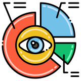

Shivam
Shivam
♡
•••
#
Skill / Technology
Application in Project
1
SQL
Complex Queries & Data Extraction
2
DBMS
Relational Database Management
3
ER Modeling
Structuring Database Entities & Relationships
4
Data Cleaning
Preprocessing Raw IPL Statistics
5

Data Visualization
Presenting Key Match Metrics & Insights